13 dec
Opening Kerstfair, 12.00 uur
Bij de vuurkorf geniet u van warme chocomel of glühwein. We serveren ook broodjes, crêpes, hapjes en erwtensoep.
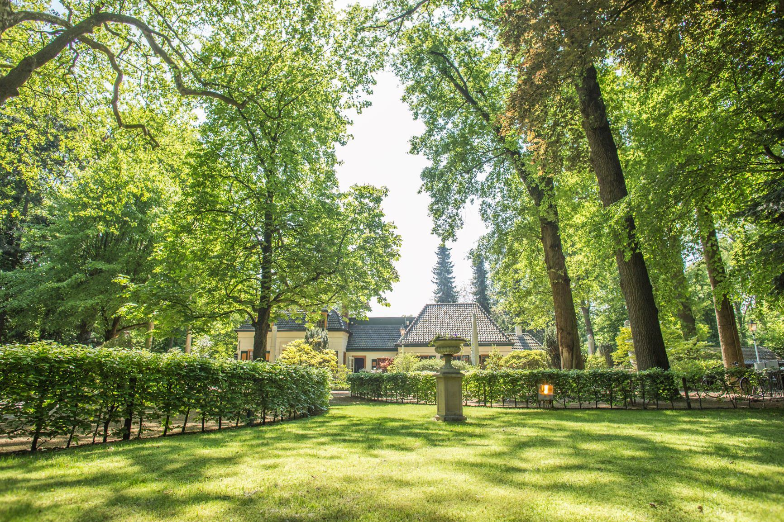
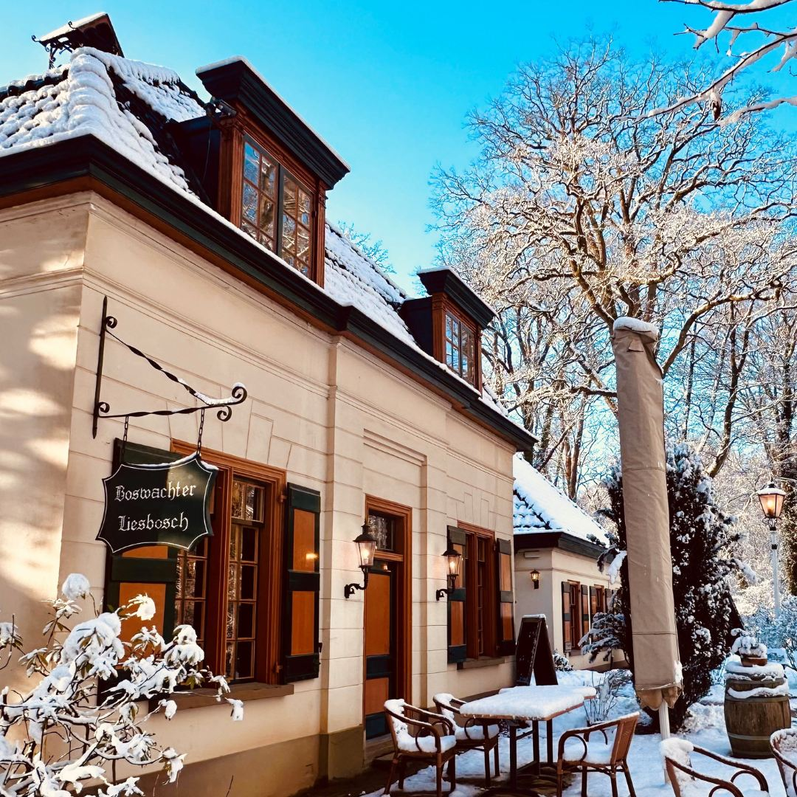
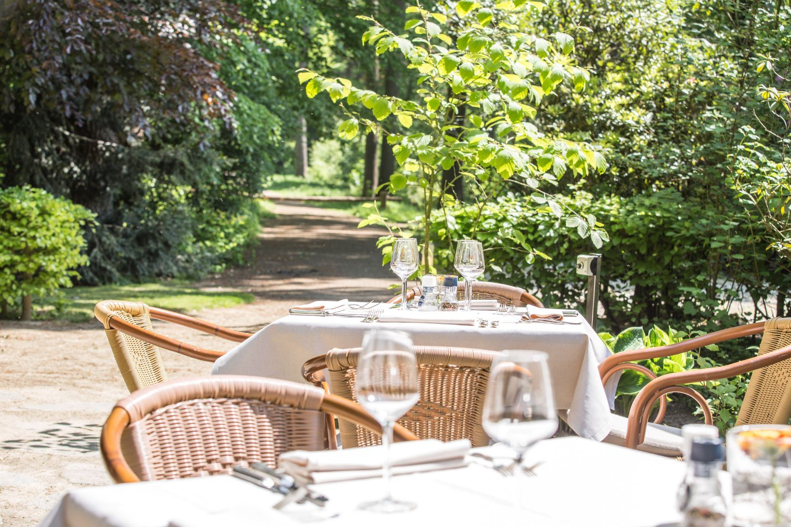
Restaurant in het eeuwenoude Liesbos, Breda
Lunch, diner of een borrel: in de tuin onder de bomen of bij de open haard. Al vier generaties ontvangt familie Takx hier gasten.
Restaurant Boswachter Liesbosch ligt prachtig in het eeuwenoude Liesbos. Wilt u heerlijk vertoeven in onze tuin? Lekker genieten bij de open haard? Het kan allemaal.
Graag nodigen wij u uit om een kijkje te nemen en de unieke sfeer te ervaren. Wij ontvangen u voor:
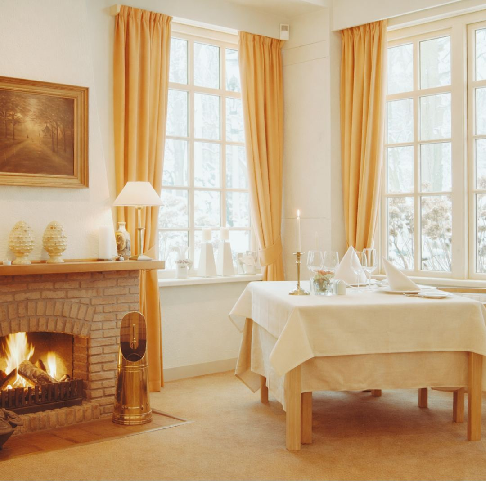
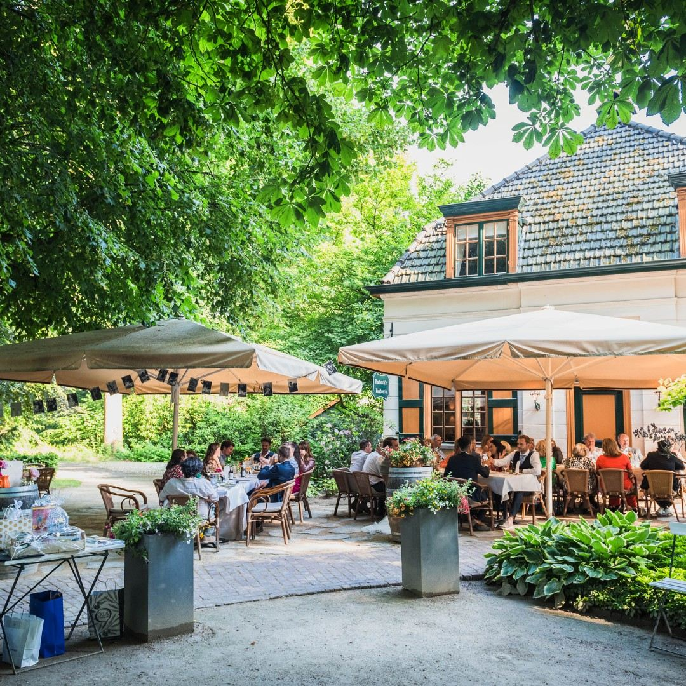
Kerstfair, kerstmarkt, een wilddemo en twee kerstmenu's. Reserveren voor kerstdiner en kerstbrunch gaat via info@boswachter-liesbosch.nl.
13 dec
Bij de vuurkorf geniet u van warme chocomel of glühwein. We serveren ook broodjes, crêpes, hapjes en erwtensoep.
13 dec
Op zondag 13 december geven Jack en Brian van Hanos Breda uitleg over het jachtseizoen en de verschillende soorten wild. Er wordt buiten live gekookt. Daarna kunt u binnen een 2-gangen wildmenu nuttigen; geeft u zich daarvoor wel even op.
13–30 dec
Elke dag open van 12.00 tot 17.00, behalve op maandag en Tweede Kerstdag.
Van familiefeest tot condoleance, van touringcar tot high tea. Er zijn vijf ruimtes, waaronder de woonkamer voor besloten diners en de achterzaal voor grotere gezelschappen. Bekijk de suggesties en neem contact op voor een voorstel op maat.
Voor gezelschappen hebben we verschillende menu's samengesteld. Deze zijn aan te passen aan uw wensen.
Menusuggesties (pdf)Informeel dineren met kleine gerechtjes. We zetten een combinatie van zit- en staanplaatsen klaar.
Walking dinner (pdf)Na een uitvaart is er vaak de wens om samen te komen. Het is ook mogelijk de dienst bij ons te houden.
Condoleance (pdf)Voor touringcarbedrijven bieden wij speciale menu's aan. Er is een grote, gratis parkeerruimte.
Busmenu's (pdf)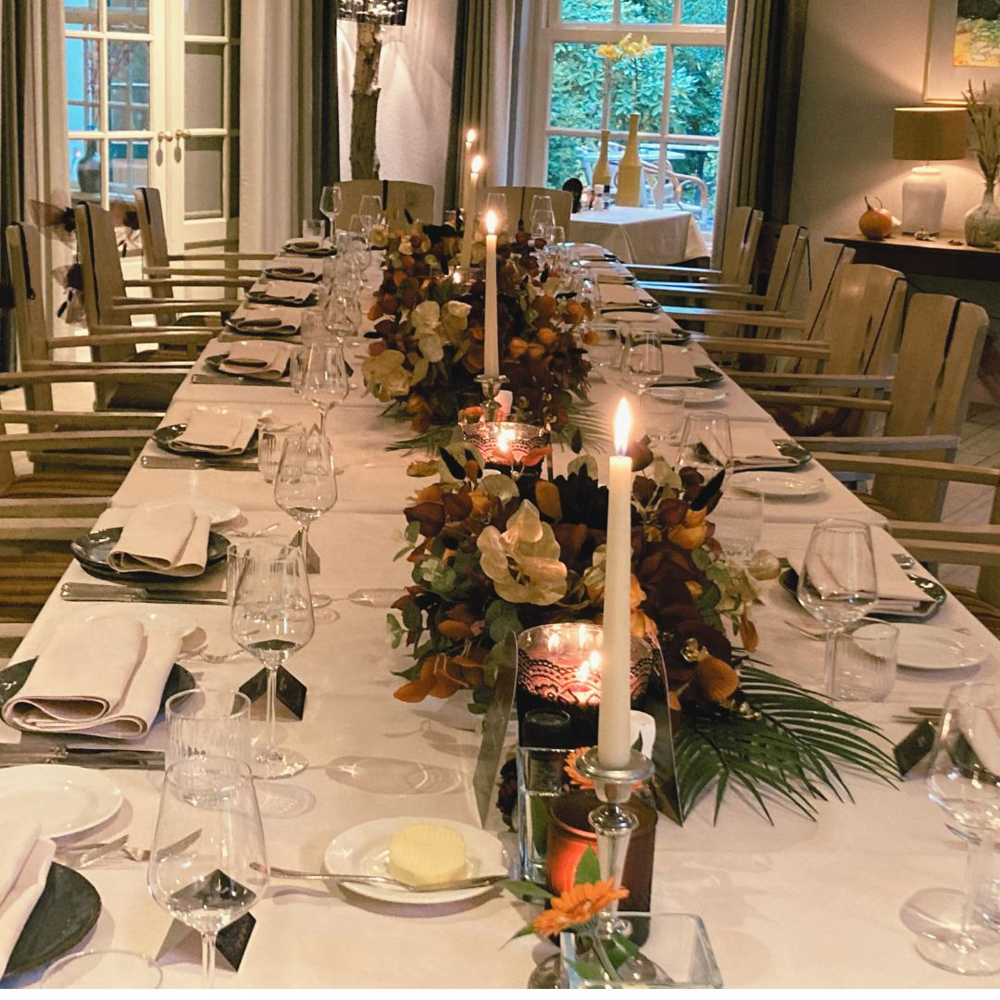
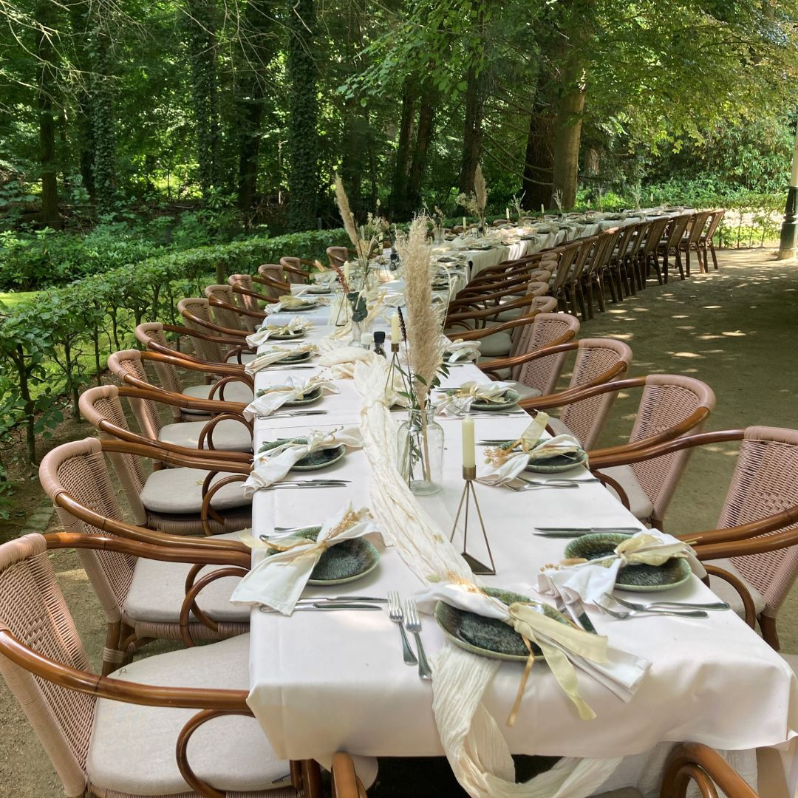
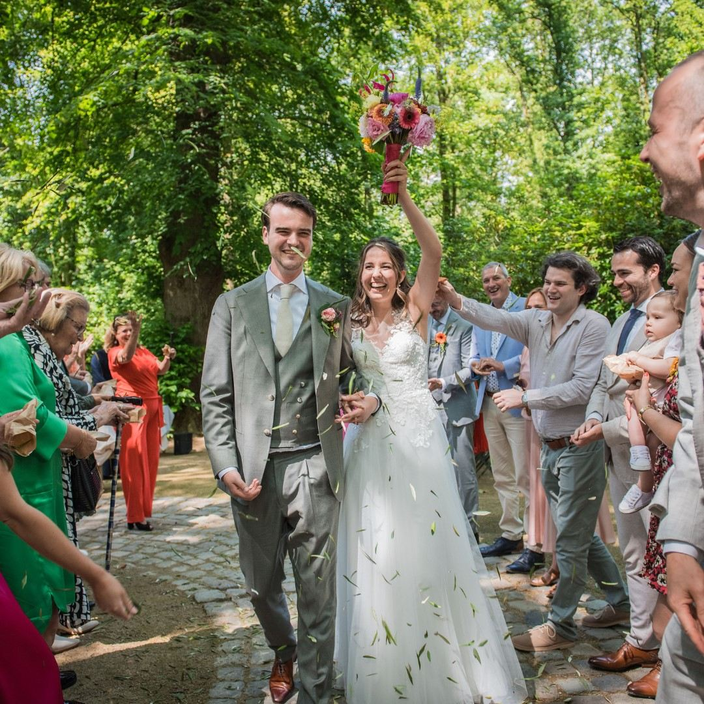
Uw gehele feest op één locatie.
Een officiële trouwceremonie in onze tuin, daarna de borrel op het terras, het diner en het feest: het kan allemaal hier, tussen de oude bomen van het Liesbos.
Vraag naar de mogelijkhedenRustig vergaderen of uw seminar houden in een bosrijke omgeving?
Restaurant Boswachter Liesbosch is hiervoor de perfecte locatie en ligt op slechts 5 minuten van de snelwegen A16 en A58. Bovendien beschikken wij over een grote, gratis parkeerruimte. Behalve bijeenkomsten en vergaderingen verzorgen wij ook bedrijfsrecepties en luxe diners.
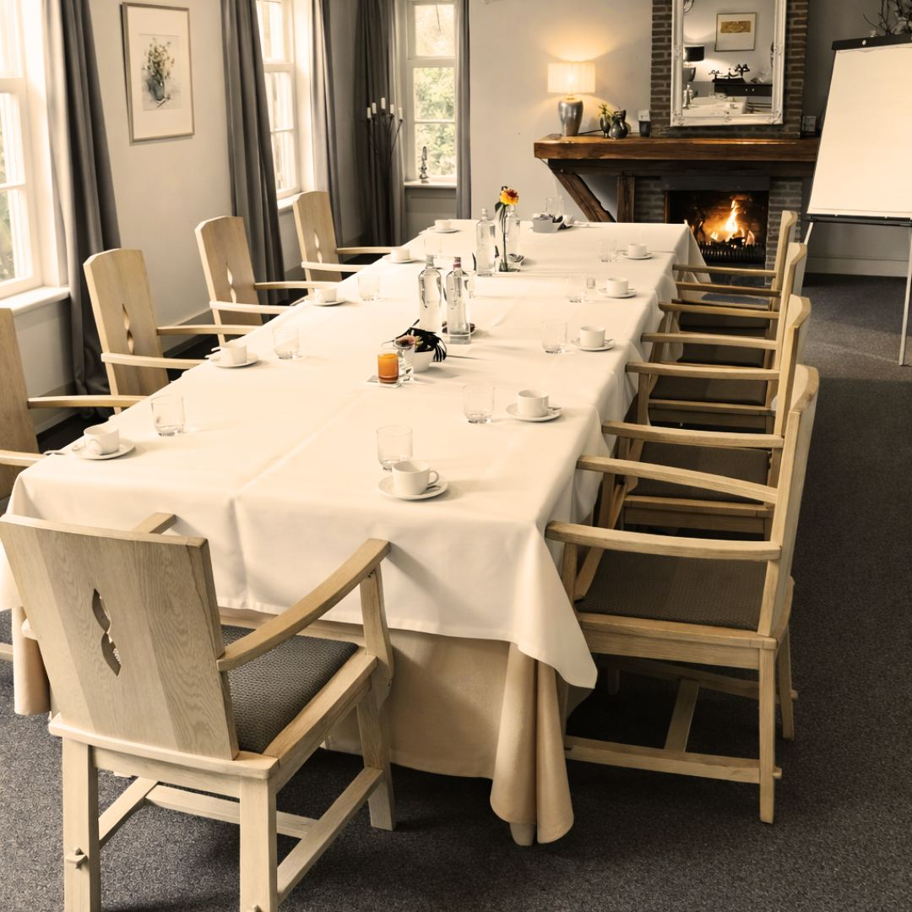
Wat zijn wij trots op ons predicaat Hofleverancier. In 2024 mochten wij dit ontvangen voor 100 jaar hard werken. Dit is de geschiedenis van het huis en van de familie.
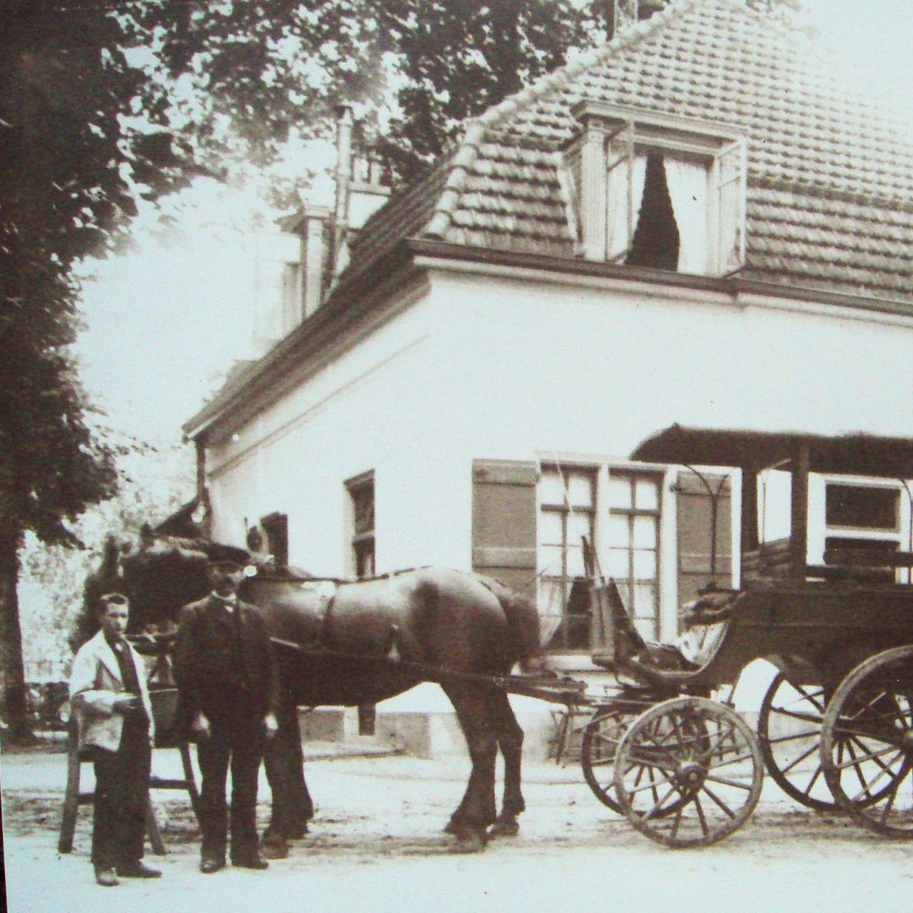
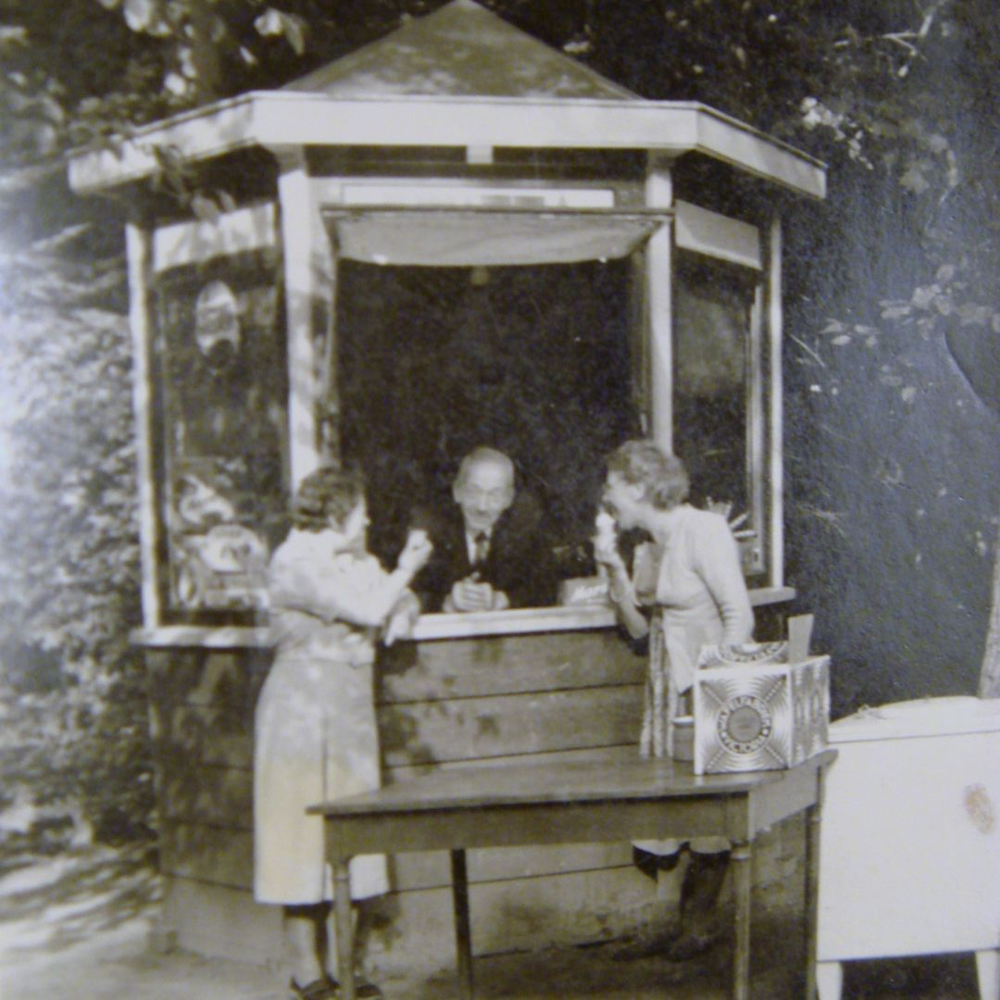
1845
Van 1840 tot 1881 zijn de bossen rond Breda eigendom van prins Frederik. In 1845 laat hij een boswachterswoning bouwen: een laag en breed pand met een hoog pannendak. Eind negentiende eeuw krijgt het een Franse kap. Op 1 mei 1888 verhuist boswachter Willem Hendrik van Berkum naar het pand. Hij mag heet water en limonade schenken aan bezoekers, die toen nog met paard en wagen kwamen.
1924
Op 1 november 1924 opent Hubertus Takx de uitspanning. Voor een jaarpacht van ƒ 2539,- krijgt hij een erf, open veranda, bakhuis, paardenstal, koetshuis, houtloods, rustplaats voor het publiek en een tuin. Met zijn vrouw Antoinetta krijgt hij twee kinderen, Margaretha en Waltherus.
1944
Zoon Waltherus, Wout, neemt het over met zijn vrouw Cornelia. In de winter werkt Wout als timmerman; alle stoelen in de zaak heeft hij zelf gemaakt en ze worden nog steeds gebruikt. Cornelia begint met maaltijden. Haar appeltaartrecept wordt nog altijd gevolgd. Er komen een ijsbereiding in de schuur, een serre en een grote speeltuin: het Liesbos was echt een dagje uit.
1973
Bert Takx en zijn vrouw Joke nemen het restaurant over. Na een grote verbouwing zijn er vijf ruimtes: het restaurant in het authentieke pand, de lounge, de woonkamer, de achterzaal en de bovenzaal. De naam wordt Boswachter Liesbosch. Sinds 1975 zijn wij een erkend leerbedrijf. Bert zet zich in voor de horeca en voert een flinke strijd voor een goede aanrijroute toen de A16 werd omgelegd.
2000
Na de hotelschool neemt Robbert de zaak over en moderniseert met rechterhand Wanda het restaurant. Opa Wouts stoelen krijgen hun lichte kleur terug, en trouwceremonies in de tuin worden mogelijk. In 2020 moeten de deuren dicht door corona, iets wat zelfs in de Tweede Wereldoorlog niet gebeurde; er komen een foodkraam, borrelboxen en afhaalmaaltijden. In 2023 krijgen Robbert en Sofie dochter Dani-Jo.
2024
Honderd jaar na de opening ontvangt het restaurant het predicaat Hofleverancier.
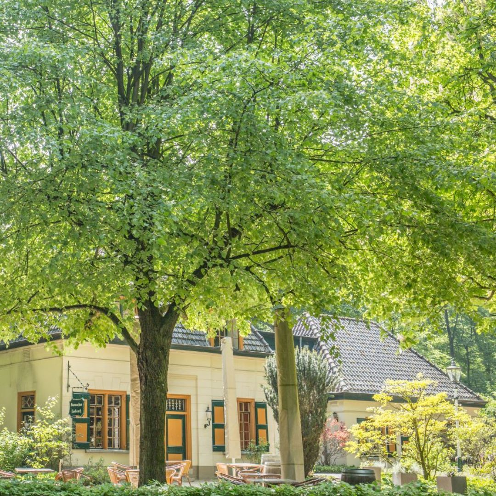
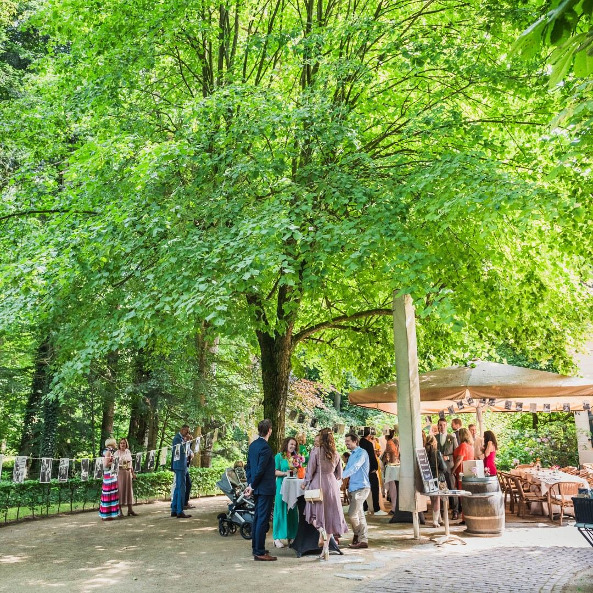
Bel ons of stuur een e-mail met de datum, het tijdstip en het aantal personen. Voor groepen, bruiloften en vergaderingen maken we graag een voorstel.
076 521 2736
info@boswachter-liesbosch.nl
| Maandag | gesloten |
|---|---|
| Dinsdag t/m zondag | keuken 11.00 – 20.00 |
5 minuten van de A16 en A58, met een grote, gratis parkeerruimte.